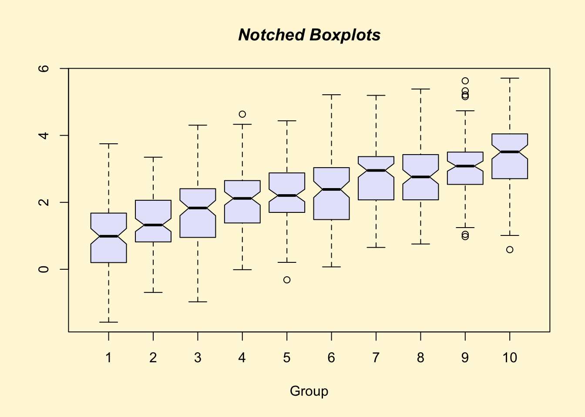
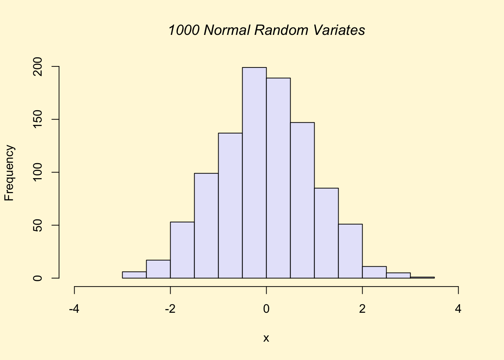

Chapter 2 Introducción a R
R es un entorno integrado para el manejo de datos, el cálculo, la generación de gráficos y análisis estadísticos. Las principales ventajas del uso de R son:
- Software libre.
- Facilidad para el manejo y almacenamiento de datos.
- Un conjunto de operadores para el cálculo de vectores y matrices.
- Una colección extensa e integrada de herramientas intermedias para el análisis estadístico de datos.
- Multitud de facilidades gráficas de altísima calidad.
- Un lenguaje de programación (muy) poderoso con muchas librerías especializadas disponibles.
- La mejor herramienta para trabajar con datos genómicos, proteómicos, redes, metabolómica, entre varias más.
- Casi todos podemos aprender por nuestra cuenta a usar excel (pero hay que pagar por la licencia, es software privativo…). Sin embargo, es más díficil aprender por nuestra cuenta R; y si lo hacemos nos da una ventaja comparativa sobre el resto.
- Además excel no es la mejor elección si queremos hacer bioinformática en serio.
2.1 Introducción a R para Estudiantes de Microbiología
R es un lenguaje de programación y un entorno de desarrollo estadístico ampliamente utilizado en la comunidad científica, incluida la microbiología. Este poderoso recurso ofrece una variedad de ventajas y funcionalidades que pueden beneficiar significativamente a los estudiantes de microbiología en su investigación y análisis de datos.
2.1.1 Ventajas de Aprender R para Estudiantes de Microbiología
- Análisis Estadístico Avanzado
R proporciona una amplia gama de paquetes y herramientas estadísticas que permiten a los estudiantes de microbiología realizar análisis avanzados de datos, desde pruebas de hipótesis básicas hasta modelos de regresión y análisis multivariados.
- Visualización de Datos
Con paquetes como ggplot2, los estudiantes pueden crear visualizaciones de datos interactivas y de alta calidad que facilitan la comprensión de patrones y tendencias en conjuntos de datos microbiológicos, como datos de secuenciación genómica o datos de conteo de microorganismos.
- Reproducibilidad y Documentación
RMarkdown es una herramienta poderosa que permite a los estudiantes escribir documentos reproducibles que combinan código, resultados y narrativa en un solo lugar. Esto promueve la transparencia, la reproducibilidad y una mejor documentación de los análisis microbiológicos.
- Acceso a una Comunidad Activa
R cuenta con una comunidad activa de usuarios y desarrolladores que comparten código, paquetes y recursos educativos. Los estudiantes pueden aprovechar este recurso para buscar ayuda, colaborar en proyectos y mantenerse al tanto de las últimas tendencias en análisis de datos microbiológicos.
- Flexibilidad y Personalización
R es un lenguaje altamente flexible que permite a los estudiantes adaptar sus análisis a las necesidades específicas de sus proyectos microbiológicos. Desde la manipulación de datos hasta la creación de modelos personalizados, R ofrece la libertad y la capacidad de personalización necesarias para abordar una amplia variedad de preguntas de investigación en microbiología.
Aprender R puede ser extremadamente beneficioso para los estudiantes de microbiología al proporcionarles las herramientas y habilidades necesarias para realizar análisis de datos sofisticados, visualizar resultados de manera efectiva y promover la reproducibilidad en su investigación científica.
2.2 Paquetes o bibliotecas
Las funciones especializadas de R se guardan en paquetes (packages) que deben ser invocados ANTES de llamar a una función del paquete.
Una manera de instalar paquetes es mediante el repositorio CRAN.
Navega por CRAN y encuentra algunos paquetes que podrían interesarte. Hay miles y cada día aumentan.
Para saber qué paquetes se tienen instalados en
tu máquina teclea la función library()
library()Para cargar un paquete, que se encuentre previamente instalado, se debe teclear
library(nombre_de_paquete)
Por ejemplo:
library(gplots) Para visualizar los paquetes ya cargados, teclea:
search()## [1] ".GlobalEnv" "package:ggpubr" "package:palmerpenguins" "package:ggplot2" "package:readxl"
## [6] "package:gplots" "tools:rstudio" "package:stats" "package:graphics" "package:grDevices"
## [11] "package:utils" "package:datasets" "package:methods" "Autoloads" "package:base"Para visualizar las funciones dentro de un paquete en particular se utiliza:
ls(2)## [1] "%>%" "add_summary" "annotate_figure" "as_ggplot"
## [5] "as_npc" "as_npcx" "as_npcy" "background_image"
## [9] "bgcolor" "border" "change_palette" "clean_table_theme"
## [13] "clean_theme" "colnames_style" "color_palette" "compare_means"
## [17] "create_aes" "desc_statby" "diff_express" "facet"
## [21] "fill_palette" "font" "gene_citation" "gene_expression"
## [25] "geom_bracket" "geom_exec" "geom_pwc" "geom_signif"
## [29] "get_breaks" "get_coord" "get_legend" "get_palette"
## [33] "get_summary_stats" "ggadd" "ggadjust_pvalue" "ggarrange"
## [37] "ggballoonplot" "ggbarplot" "ggboxplot" "ggdensity"
## [41] "ggdonutchart" "ggdotchart" "ggdotplot" "ggecdf"
## [45] "ggerrorplot" "ggexport" "gghistogram" "ggline"
## [49] "ggmaplot" "ggpaired" "ggpar" "ggparagraph"
## [53] "ggpie" "ggpubr_options" "ggqqplot" "ggscatter"
## [57] "ggscatterhist" "ggstripchart" "ggsummarystats" "ggsummarytable"
## [61] "ggtext" "ggtexttable" "ggviolin" "gradient_color"
## [65] "gradient_fill" "grids" "group_by" "labs_pubr"
## [69] "mean_ci" "mean_range" "mean_sd" "mean_se_"
## [73] "median_hilow_" "median_iqr" "median_mad" "median_q1q3"
## [77] "median_range" "mutate" "npc_to_data_coord" "rotate"
## [81] "rotate_x_text" "rotate_y_text" "rownames_style" "rremove"
## [85] "set_palette" "show_line_types" "show_point_shapes" "stat_anova_test"
## [89] "stat_bracket" "stat_central_tendency" "stat_chull" "stat_compare_means"
## [93] "stat_conf_ellipse" "stat_cor" "stat_friedman_test" "stat_kruskal_test"
## [97] "stat_mean" "stat_overlay_normal_density" "stat_pvalue_manual" "stat_pwc"
## [101] "stat_regline_equation" "stat_stars" "stat_welch_anova_test" "tab_add_border"
## [105] "tab_add_footnote" "tab_add_hline" "tab_add_title" "tab_add_vline"
## [109] "tab_cell_crossout" "tab_ncol" "tab_nrow" "table_cell_bg"
## [113] "table_cell_font" "tbody_add_border" "tbody_style" "text_grob"
## [117] "thead_add_border" "theme_classic2" "theme_cleveland" "theme_pubclean"
## [121] "theme_pubr" "theme_transparent" "ttheme" "xscale"
## [125] "yscale"EJEMPLOS DE VISUALIZACIÓN DE GRÁFICOS
demo(graphics)##
##
## demo(graphics)
## ---- ~~~~~~~~
##
## > # Copyright (C) 1997-2009 The R Core Team
## >
## > require(datasets)
##
## > require(grDevices); require(graphics)
##
## > ## Here is some code which illustrates some of the differences between
## > ## R and S graphics capabilities. Note that colors are generally specified
## > ## by a character string name (taken from the X11 rgb.txt file) and that line
## > ## textures are given similarly. The parameter "bg" sets the background
## > ## parameter for the plot and there is also an "fg" parameter which sets
## > ## the foreground color.
## >
## >
## > x <- stats::rnorm(50)
##
## > opar <- par(bg = "white")
##
## > plot(x, ann = FALSE, type = "n")
##
## > abline(h = 0, col = gray(.90))
##
## > lines(x, col = "green4", lty = "dotted")
##
## > points(x, bg = "limegreen", pch = 21)
##
## > title(main = "Simple Use of Color In a Plot",
## + xlab = "Just a Whisper of a Label",
## + col.main = "blue", col.lab = gray(.8),
## + cex.main = 1.2, cex.lab = 1.0, font.main = 4, font.lab = 3)
##
## > ## A little color wheel. This code just plots equally spaced hues in
## > ## a pie chart. If you have a cheap SVGA monitor (like me) you will
## > ## probably find that numerically equispaced does not mean visually
## > ## equispaced. On my display at home, these colors tend to cluster at
## > ## the RGB primaries. On the other hand on the SGI Indy at work the
## > ## effect is near perfect.
## >
## > par(bg = "gray")
##
## > pie(rep(1,24), col = rainbow(24), radius = 0.9)
##
## > title(main = "A Sample Color Wheel", cex.main = 1.4, font.main = 3)
##
## > title(xlab = "(Use this as a test of monitor linearity)",
## + cex.lab = 0.8, font.lab = 3)
##
## > ## We have already confessed to having these. This is just showing off X11
## > ## color names (and the example (from the postscript manual) is pretty "cute".
## >
## > pie.sales <- c(0.12, 0.3, 0.26, 0.16, 0.04, 0.12)
##
## > names(pie.sales) <- c("Blueberry", "Cherry",
## + "Apple", "Boston Cream", "Other", "Vanilla Cream")
##
## > pie(pie.sales,
## + col = c("purple","violetred1","green3","cornsilk","cyan","white"))
##
## > title(main = "January Pie Sales", cex.main = 1.8, font.main = 1)
##
## > title(xlab = "(Don't try this at home kids)", cex.lab = 0.8, font.lab = 3)
##
## > ## Boxplots: I couldn't resist the capability for filling the "box".
## > ## The use of color seems like a useful addition, it focuses attention
## > ## on the central bulk of the data.
## >
## > par(bg="cornsilk")
##
## > n <- 10
##
## > g <- gl(n, 100, n*100)
##
## > x <- rnorm(n*100) + sqrt(as.numeric(g))
##
## > boxplot(split(x,g), col="lavender", notch=TRUE)
##
## > title(main="Notched Boxplots", xlab="Group", font.main=4, font.lab=1)
##
## > ## An example showing how to fill between curves.
## >
## > par(bg="white")
##
## > n <- 100
##
## > x <- c(0,cumsum(rnorm(n)))
##
## > y <- c(0,cumsum(rnorm(n)))
##
## > xx <- c(0:n, n:0)
##
## > yy <- c(x, rev(y))
##
## > plot(xx, yy, type="n", xlab="Time", ylab="Distance")
##
## > polygon(xx, yy, col="gray")
##
## > title("Distance Between Brownian Motions")
##
## > ## Colored plot margins, axis labels and titles. You do need to be
## > ## careful with these kinds of effects. It's easy to go completely
## > ## over the top and you can end up with your lunch all over the keyboard.
## > ## On the other hand, my market research clients love it.
## >
## > x <- c(0.00, 0.40, 0.86, 0.85, 0.69, 0.48, 0.54, 1.09, 1.11, 1.73, 2.05, 2.02)
##
## > par(bg="lightgray")
##
## > plot(x, type="n", axes=FALSE, ann=FALSE)
##
## > usr <- par("usr")
##
## > rect(usr[1], usr[3], usr[2], usr[4], col="cornsilk", border="black")
##
## > lines(x, col="blue")
##
## > points(x, pch=21, bg="lightcyan", cex=1.25)
##
## > axis(2, col.axis="blue", las=1)
##
## > axis(1, at=1:12, lab=month.abb, col.axis="blue")
##
## > box()
##
## > title(main= "The Level of Interest in R", font.main=4, col.main="red")
##
## > title(xlab= "1996", col.lab="red")
##
## > ## A filled histogram, showing how to change the font used for the
## > ## main title without changing the other annotation.
## >
## > par(bg="cornsilk")
##
## > x <- rnorm(1000)
##
## > hist(x, xlim=range(-4, 4, x), col="lavender", main="")
##
## > title(main="1000 Normal Random Variates", font.main=3)
##
## > ## A scatterplot matrix
## > ## The good old Iris data (yet again)
## >
## > pairs(iris[1:4], main="Edgar Anderson's Iris Data", font.main=4, pch=19)
##
## > pairs(iris[1:4], main="Edgar Anderson's Iris Data", pch=21,
## + bg = c("red", "green3", "blue")[unclass(iris$Species)])
##
## > ## Contour plotting
## > ## This produces a topographic map of one of Auckland's many volcanic "peaks".
## >
## > x <- 10*1:nrow(volcano)
##
## > y <- 10*1:ncol(volcano)
##
## > lev <- pretty(range(volcano), 10)
##
## > par(bg = "lightcyan")
##
## > pin <- par("pin")
##
## > xdelta <- diff(range(x))
##
## > ydelta <- diff(range(y))
##
## > xscale <- pin[1]/xdelta
##
## > yscale <- pin[2]/ydelta
##
## > scale <- min(xscale, yscale)
##
## > xadd <- 0.5*(pin[1]/scale - xdelta)
##
## > yadd <- 0.5*(pin[2]/scale - ydelta)
##
## > plot(numeric(0), numeric(0),
## + xlim = range(x)+c(-1,1)*xadd, ylim = range(y)+c(-1,1)*yadd,
## + type = "n", ann = FALSE)
##
## > usr <- par("usr")
##
## > rect(usr[1], usr[3], usr[2], usr[4], col="green3")
##
## > contour(x, y, volcano, levels = lev, col="yellow", lty="solid", add=TRUE)
##
## > box()
##
## > title("A Topographic Map of Maunga Whau", font= 4)
##
## > title(xlab = "Meters North", ylab = "Meters West", font= 3)
##
## > mtext("10 Meter Contour Spacing", side=3, line=0.35, outer=FALSE,
## + at = mean(par("usr")[1:2]), cex=0.7, font=3)
##
## > ## Conditioning plots
## >
## > par(bg="cornsilk")
##
## > coplot(lat ~ long | depth, data = quakes, pch = 21, bg = "green3")##
## > par(opar)Ejercicios
- Instala las siguientes librerías que te serviran durante todo el curso
- markdown
- ggplot2
INFORMACIÓN ADICIONAL
Existen repositorios adicionales a CRAN, uno de ellos es Bioconductor, en él puedes buscar e instalar paquetes como ggtree.
Ejercicio
1. Explora la página de Bioconductor, apóyate de su buscador e instala el paquete ggtree.
2.3 Ayuda en R
En la mayoría de las ocasiones desconocemos el alcance de alguna paquetería, los criterios de alguna función o en general, sabemos lo que queremos hacer pero no tenemos ni idea de qué paqueteria usar.
Los comandos help() y ? son equivalentes, ambos van a permitir encontrar información sobre paqueterias, comandos o funciones generales de R. Se debe teclear help(nombre_comando) o ?nombre_comando
Por ejemplo, para buscar información detallada del comando solve:
help(solve)?solvePara buscar ayuda de funciones o palabra reservadas se utilizan comillas:
help("for")También existen opciones como help.start() y help.search() para obtener una versión extendida de la ayuda general desplegada en un navegador. Para ello se requiere tener la ayuda en HTML instalada y conexión a la red.
help.search() es una función que escanea documentación para paquetes previamente instalados.
Ejemplo:
help.search("clustering")help.start() es una función que despliega información basada en documentos en línea de la versión actual de R, además de brindar links a manuales y la lista de las paqueterías instaladas, entre otras cosas.
Ejemplo:
help.start()Cuando queremos ver ejemplos del uso de los comandos usamos la función example()
Ejemplo:
example("hclust")##
## hclust> require(graphics)
##
## hclust> ### Example 1: Violent crime rates by US state
## hclust>
## hclust> hc <- hclust(dist(USArrests), "ave")
##
## hclust> plot(hc)
##
## hclust> plot(hc, hang = -1)
##
## hclust> ## Do the same with centroid clustering and *squared* Euclidean distance,
## hclust> ## cut the tree into ten clusters and reconstruct the upper part of the
## hclust> ## tree from the cluster centers.
## hclust> hc <- hclust(dist(USArrests)^2, "cen")
##
## hclust> memb <- cutree(hc, k = 10)
##
## hclust> cent <- NULL
##
## hclust> for(k in 1:10){
## hclust+ cent <- rbind(cent, colMeans(USArrests[memb == k, , drop = FALSE]))
## hclust+ }
##
## hclust> hc1 <- hclust(dist(cent)^2, method = "cen", members = table(memb))
##
## hclust> opar <- par(mfrow = c(1, 2))
##
## hclust> plot(hc, labels = FALSE, hang = -1, main = "Original Tree")##
## hclust> plot(hc1, labels = FALSE, hang = -1, main = "Re-start from 10 clusters")
##
## hclust> par(opar)
##
## hclust> ### Example 2: Straight-line distances among 10 US cities
## hclust> ## Compare the results of algorithms "ward.D" and "ward.D2"
## hclust>
## hclust> mds2 <- -cmdscale(UScitiesD)
##
## hclust> plot(mds2, type="n", axes=FALSE, ann=FALSE)
##
## hclust> text(mds2, labels=rownames(mds2), xpd = NA)
##
## hclust> hcity.D <- hclust(UScitiesD, "ward.D") # "wrong"
##
## hclust> hcity.D2 <- hclust(UScitiesD, "ward.D2")
##
## hclust> opar <- par(mfrow = c(1, 2))
##
## hclust> plot(hcity.D, hang=-1)##
## hclust> plot(hcity.D2, hang=-1)
##
## hclust> par(opar)Todo lo anterior requiere que conozcamos el nombre correcto del comando, pero ¿qué pasa si no lo sabemos?, ¿lloramos? no.
Podemos utilizar el comando apropos() para encontrar todo lo relacionado con algún término.
Ejemplo:
apropos("solve")## [1] ".rs.resolveAliasedPath" ".rs.resolveAliasedSymbol" ".rs.resolveFormals"
## [4] ".rs.resolveObjectFromFunctionCall" ".rs.resolveObjectSource" ".rs.rnb.resolveActiveChunkId"
## [7] "backsolve" "forwardsolve" "qr.solve"
## [10] "solve" "solve.default" "solve.qr"Ahora, ¿qué pasa cuando tengo la idea de lo que quiero hacer pero no se qué paqueteria usar, ni cuál comando? puedo usar ?? seguido de una palabra clave. Esto nos arrojará sugerencias sobre lo que deseamos hacer.
Ejemplo:
??DNANOTA Se recomienda el uso del autocompletado, de esta manera reducirás errores de dedo.
2.4 Expresiones y asignaciones
Las expresiones y asignaciones son los dos tipos de resultados que arroja R.
Las expresiones sólo se muestran en la salida estándar y NO se guardan en alguna variable, es decir, cada que se corra la línea se obtendran valores distintos.
Ejemplo:
rnorm(10)## [1] 0.8268902 -1.1999361 -0.9443179 -0.7761989 -0.4459732 0.9174054 -0.7404121 -2.8180375 0.4211560 -1.2553172rnorm(10)## [1] 1.24628921 -0.22743335 -0.55522959 -0.14929818 -0.17619392 -1.88290903 0.02386734 0.40599307 0.08868238 -0.52964715Las asignaciones, como su nombre lo indica, se guardan los valores al ser asignados a una variable. Esto se puede lograr mediante el uso de <-
Ejemplo:
x <- rnorm(10)x## [1] 0.71569804 -0.29310211 0.02266350 -1.40956603 0.83378648 -0.47041521 -0.91535094 -0.25113454 -0.46093041 -0.06051892NOTA El símbolo <- es equivalente en función a = pero puede llevar a confusiones importantes con el operador ==.

Operador de asignación. Así que evita el uso del igual
Otro punto a considerar respecto a las asiganciones es que R es capaz de distinguir entre mayúsculas y minúsculas, por lo que la misma letra puede contener valores distintos.
Ejemplo:
a <- 3
A <- 6a## [1] 3A## [1] 6Una opción es definirlas en más de una línea, ejemplo:
a <-
pi + 12NOTA Ten mucha precaución con el nombre que asignas a un valor, ya que podrías sobreescribirlo y se le quedará asignado el último valor.
Ejemplo:
b <- 3
b## [1] 3b <- 8
b## [1] 8La separación de comandos puede darse de dos formas:
Empleando ;, ejemplo:
a <- 3; b <-5o usando un salto de línea, esta es una mejor opción, ejemplo:
a <- 3
b <-52.5 Movimiento entre directorios
Otra de las ventajas que ofrece R es que permite ubicar algún archivo o saber la dirección del directorio en la que nos encontramos actualmente, todo ello sin necesidad de salir de la interfaz.
Para saber en qué directorio estamos, se teclea:
getwd()## [1] "/Users/robertoalvarez/Documents/GitHub/Bravo_Garcia_Maria_Fernanda_Bioinfo_20204"Para cambiar de directorio utilizamos setwd("direccion_a_la_que_quieres_ir")
setwd("~")##Bash en R
También se pueden usar los comandos de la terminal de bash dentro de R, utilizando la función system()
Para listar archivos de una carpeta usamos ls
system("ls -la")Para saber en qué directorio estamos usamos la función análoga a getwd(), que es pwd
system("pwd")Importante: Como regla general todos los nombres van entre comillas: nombre de carpetas, archivos, de columnas, de renglones,etc.
2.6 Operaciones aritméticas
R también puede ser usado como calculadora. Se puede sumar, restar, multiplicar,dividir, “exponenciar” y calcular la raíz cuadrada.
SUMA con el operador +
a + b## [1] 8RESTA con el operador -
a - b## [1] -2MULTIPLICACIÓN con el operador *
a * b## [1] 15DIVISIÓN con el operador /
a / b## [1] 0.6EXPONENTE con los operadoradores ** o ^
a ** b## [1] 243a ^ b## [1] 243RAÍZ CUADRADA con la función sqrt()
sqrt(a)## [1] 1.732051LOGARITMO con la función log()
log(a)## [1] 1.0986122.6.1 Prioridad en las operaciones
Las operaciones se efectuan en el siguiente orden:
- izquierda a derecha
sqrt()y**^*y/+y-<-
IMPORTANTE Este orden se altera si se presenta un paréntesis. En ese caso la operación dentro del paréntesis es la que se realiza primero.
Ejemplos:
4 + 2 * 3 = 4 + 6 = 10
4 - 15/3 + 3^2 + sqrt(9) = 4 - 15/3 + 9 + 3 = 4 - 5 + 12 = 13
4 - (3+7)^2 + (2+3)/5 = 4 - (10)^2 + 5/5 = 4 - 100 + 1 = -95
Ejercicios
Resuelve en un pedazo de papel primero para saber cuál sería el resultado de las siguientes operaciones aritméticas. Después comprueba tu resultado tecleandolas en R.
- 1 + 2*3 + 3 + 15/3
- 4 - 15/3 + 3^2 + 3*sqrt(81)
- 40 - (4+3)^2 + (10-5)/3
- 32^5 - (3-5)*2 + 32/sqrt(64)
- 1/(3^-3) + (8-10^2) - (25/sqrt(25))^2
2.7 Tipos de valores en R
2.7.1 Valores booleanos
También conocidos como Datos lógicos.
Este tipo de datos sólo contienen información TRUE o FALSE, lo cual sirve para evaluar si los elementos de un vector cumplen con los criterios deseados. Para ello se utilizan los operadores de comparación:
- igual
== - no es igual a
!= - menor que
< - mayor que
> - menor o igual que
<= - mayor o igual que
>=
Ejemplo:
1 < 5## [1] TRUE10 == 0 ## [1] FALSE10 != 0 ## [1] TRUE10 <= 0 ## [1] FALSENOTA Dentro de R los valores lógicos TRUE y FALSE tienen un valor numérico. TRUEequivale a 1 y FALSE es equivalente a 0. Esto permite cuantificar el número de elementos que cumplen con los criterios, ¿cómo? mediante la suma de los TRUEs.
Ejercicios Demuestra si: 1. El logaritmo base 10 de 20 es menor que la raíz cuadrada de 4. Desarrollalo en una sola línea. 2. 1/3^-1 es igual a 3/1^-1 3. (-2)^2 no es igual a (2)^2
2.7.2 Caracter
Son strings de texto y se caracterizan porque cada uno de los elementos va entre comillas. Los elementos pueden ser desde sólo un caracter hasta oraciones. Podría parecer que la variable a la cual lo asignamos contiene números, pero las comillas indican que serán tratados como texto. Podemos subsetearlos por su índice o buscando literalmente el texto.
Ejemplo:
x<- "La candente mañana de febrero en que Beatriz Viterbo murió, después de una imperiosa agonía que no se rebajó un solo instante ni al sentimentalismo ni al miedo"2.7.3 Enteros y números (numeric)
Existen dos formas diferentes en que las computadoras pueden guardar los números y hacer operaciones matemáticas con ellos: numeric e integer.
Por lo común no importa esta diferencia, pero puede ser relevante para algunas funciones de Bioconductor. En R se representan los números como numeric y el tamaño máximo que maneja para un integer es ligeramente más chico que el tamaño del genoma humano.
¿Cómo revisar si un objeto es numeric o entero? Con la función class()
x <- 1
class(x)## [1] "numeric"x <- 1:3
class(x)## [1] "integer"